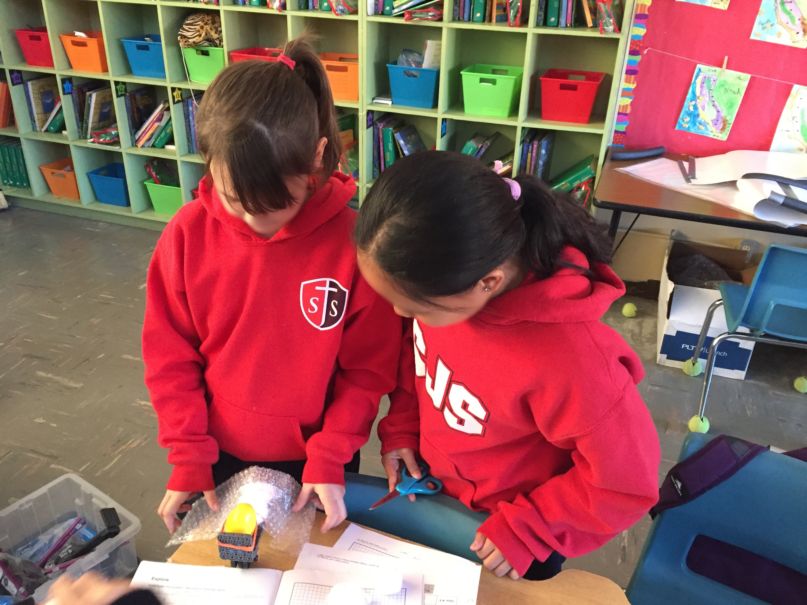
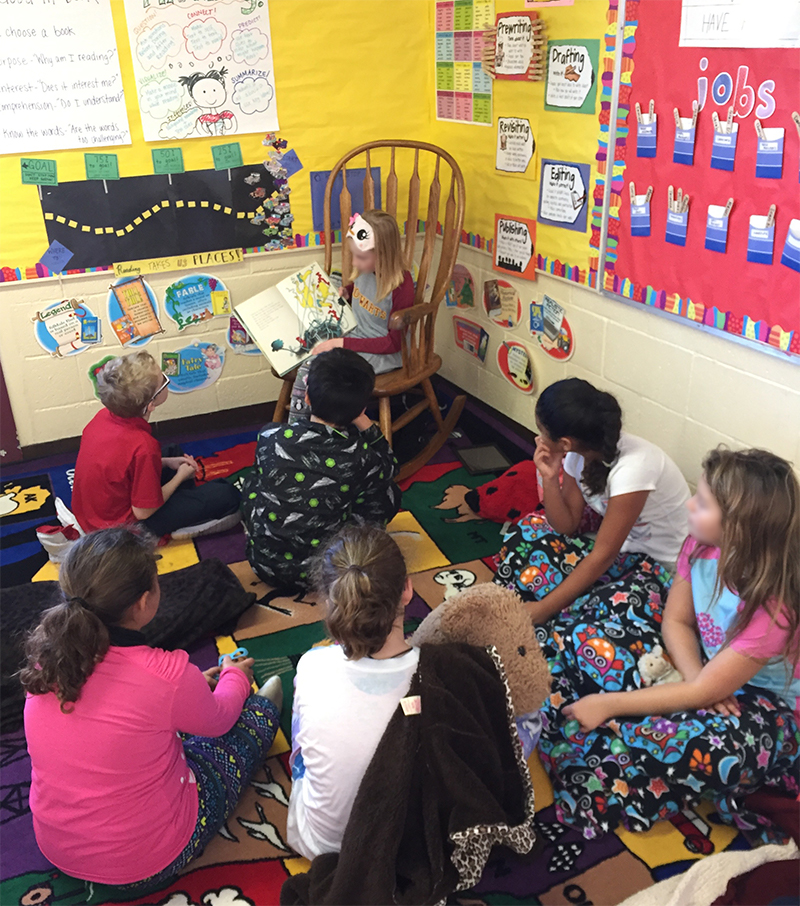
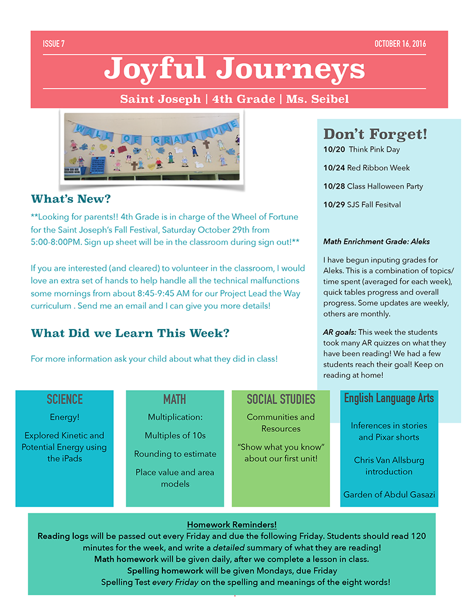

Enthusiastic educator providing creative lessons and engaging classroom instruction to promote the goals of literacy, critical-thinking, problem solving, collaboration skills and applications to everyday life for all students.
Although my original plan was to teach early primary, a Fourth Grade student teaching position in the Chicago Public School System changed my mind by allowing me to experience older students' curiosity and desire to learn. Since then, I've gain experience teaching Second, Third and Fourth Grades.
Learn More
Development of reading and writing skills is critical for every student. I hold an endorsement in Language Arts, along with certification to teach Italian (strengthened by a semester in Rome and a year teaching in a Milan High School following my undergraduate education).
Learn More
A Master's-level concentration in English to Speakers of Other Languages (ESOL), along with my own experience learning another language, have armed me with proven teaching techniques, professional resources and knowledge of the special requirements needed to teach in a diverse classroom environment.
Learn More
Develop and implement units and lessons based on standards, materials available, student interest, and cross-curricular subjects.
Apply varied assessment methods to measure the knowledge gained by students and to improve student learning.

Hands-on activities can increase student engagement and comprehension, as in this fun-with-physics "Don't Break Your Egg" vehicle restraint science project.
Working in both public and private, and in urban and rural schools, I have gained experience in diverse classroom settings. When creating lessons, I take students’ cultures, backgrounds, levels of knowledge/skills, and learning styles into consideration and provide multiple means of access to materials.

Having students take turns reading aloud is one way to learn, share and celebrate diversity in the classroom.
As a teacher I aim to encourage life-long learning in all my students. Exposing students to opportunities beyond the classroom is one way to foster a love of learning.
Example: Having lived in Italy for a year, I introduced my 3rd grade students to the language and culture of another country with our Italian Word of the Day, and by taking them on a visual journey by sharing this video project created as part of my PACE Master's Program curriculum.

Example: I created a classroom newsletter to provide consistent communication about what’s occurring in the classroom, upcoming events, important information and student achievements. Read Example Newsletter
Teacher
2nd and 4th Grade
Saint Bernadette Elementary
Burien, WA
Teacher
4th Grade
Saint Joseph Elementary
Redding, CA
Teacher
3rd Grade
Sacred Heart Elementary
Red Bluff, CA
English Teaching Assistant
9th-12th Grade
Liceo Leonardo da Vinci
Milan, Italy
Student Teaching
4th Grade
Goudy Elementary
Chicago, IL